Figure 1: Architecture of the Weave system.
1. Overview
Performance problems may arise when a Web site provides access to large numbers of pages that are dynamically built from a database. In this context, producing a Web page may require costly interaction with the database system mainly, for connection and querying. The database cost adds up to the already non-negligeable base cost of Web page delivery. A solution for reducing the client waiting time relies on caching HTML pages. Despite good performance, this solution has several major drawbacks. It incurs significant space overhead, propagating updates from the database to the cached data is made more difficult, and the caching granularity is not always appropriate. For instance, different fragments in a page can have different update frequencies, and caching at the page level imposes the recomputation of the entire page, even if some parts of the page did not change.
To overcome these problems, we propose
a Web site management system, called Weave, supporting customized
cache management and
automatic generation of runtime policies
from declarative specification of Web sites.
Weave provides three main capabilities:
2. Architecture of the system
Figure 1: Architecture of the Weave system.
The Weave architecture, depicted in Figure 1, is based on the following main components:
3. Scenario of the
demo
The demonstration starts by showing how
to specify a Web site using the WeaveL language and a set of XSL style
sheets. Then, we will show how to specify a runtime policy using the WeaveRPL
language.
The figure bellow shows the HTML interface of the system. This interface allows the Web administrator to start and tune the system from any Web browser. It displays the architecture of the system as a clickable image map. Clicking on different parts of the image takes to different pages. This allows the administrator to interact with a specific component of the system without altering the others.
The first time the system is started up with a set of default parameters (e.g., database URL, JDBC driver, username, password, default runtime policy, etc) specified in a configuration file.
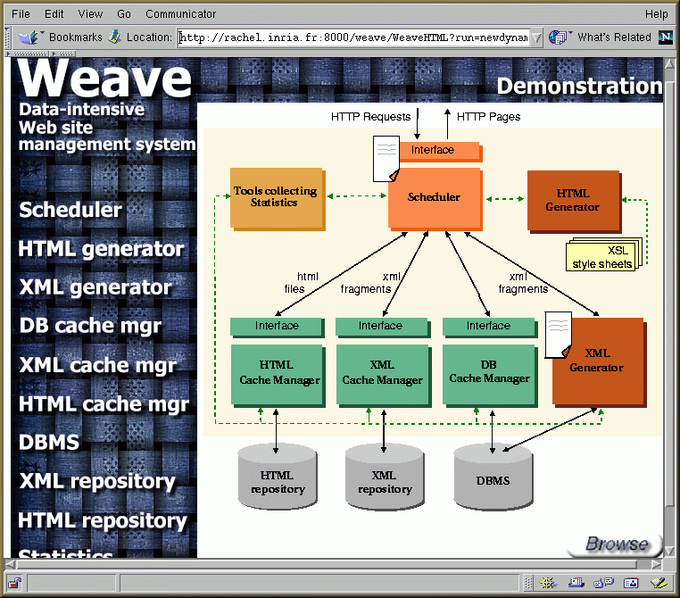
In the following we run the system using
a WeaveL program called "newdynamic.rtp". The program contains the declarative
specification of a Web site derived from the TPCD benchmark. The
database is loaded into the Oracle8 DBMS. It contains information about
products, customers, supplier parts and client orders.
As described bellow, the program is chosen
from a list of predefined programs and runtime policies. This list
is obtained by clicking of the scheduler component in the previous figure.
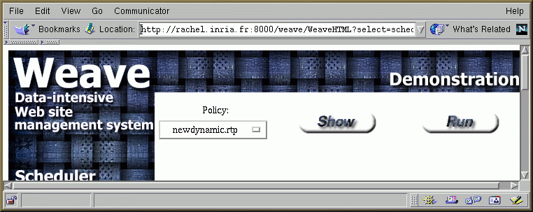
Button "Run" allows to run the system using
the specified program or runtime policy. By clicking on button "Show" we
can show the content of the selected program.
A fragment of the "newdynamic.rtp"
program is presented bellow. It produces pages of customers, where each
customer page contains the customer name, his address, a set of links
to his suppliers' pages, and a set of links to his orders' pages.
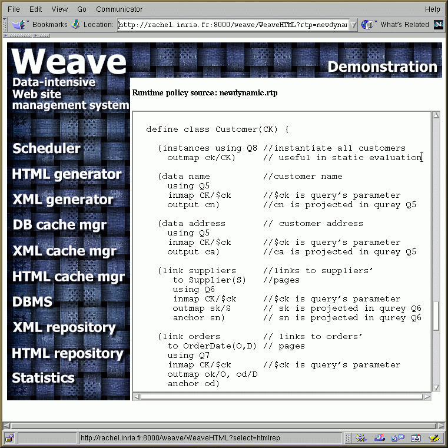
The next figure shows the state of the system after running the system using the "newdynamic.rtp" program. The scheduler parses the program, keeps for itself the information it needs to handle the client requests and passes the rest of the parsed program to the concerned components of the system. In this case, the XML Generator receives the schema description of the desired Web site.
By clicking on the scheduler (or on white paper) we can see the part of information it keeps. This information tells it to redirect all the client requests to the XML Generator which has the task to maintain the site schema, interact with the database to execute the SQL queries and build intermediate XML fragments.
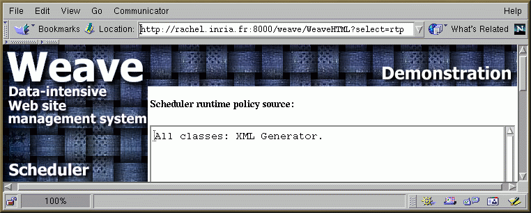
By clicking on the XML Generator component, we can see a graphical representation of the site schema as shown in the figure bellow. The schema provides the following organization of the data. There is a Root page with two links to suppliers (the node labeled (Suppliers)) and customers (Customers). Both suppliers and customers are grouped by geographical region (e.g., Supplierreg(RK)), and inside each region by nationality (e.g., Suppliernat(NK)). Suppliers and customers have further links to detailed information about parts, orders, etc.
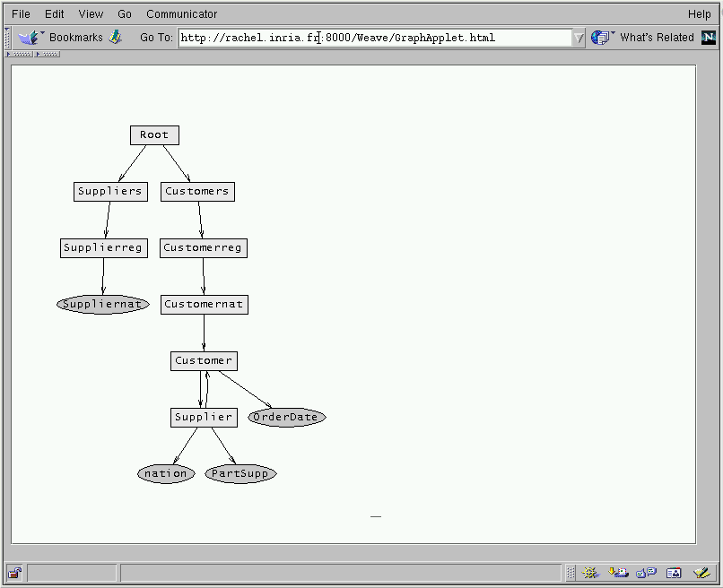
This figure shows the list of XSL style sheets used in the system for the graphical presentation of the site pages. This list is obtained by clicking on the HTML Generator component. The right frame shows the content of the selected XSL style sheet on the left frame.
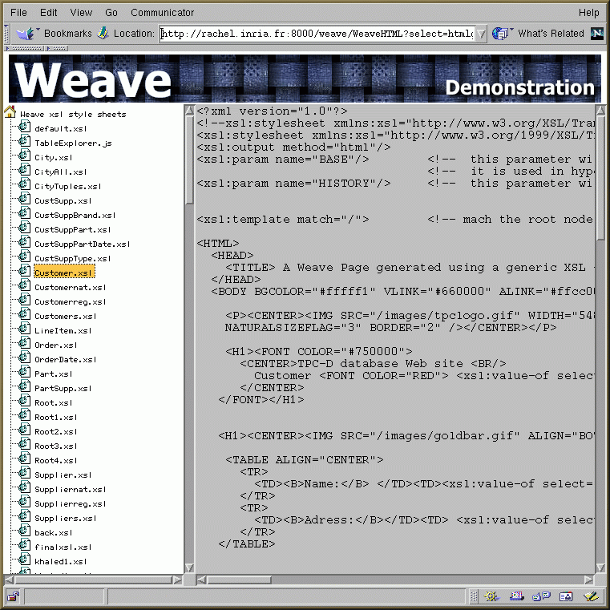
The "show" button on the figure displaying the system architecture allows to browse the resulting Web site. As no caching is specified, all the Web pages are generated on the fly. The chosen pages are: the Root page with two links to suppliers and customers pages, a pages with links to five regions (Africa, America, Asia, etc) and a page with links to nations of "Africa".
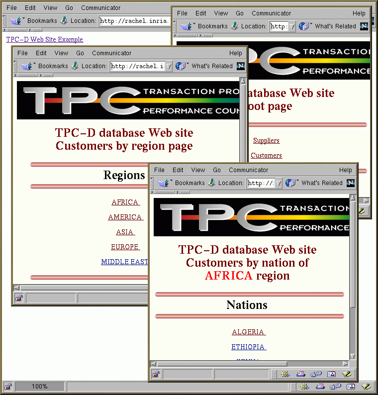
The following figure shows the configuration page of the system statistic generation. This page is obtained by clicking on the Statistic Manager component. Using this page, the Web administrator can select the statistics he wants to generate and display in the execution report when the system in run in trace mode. Button "Update" save the selected options and the "Show" button allows to display the content of the current execution report.
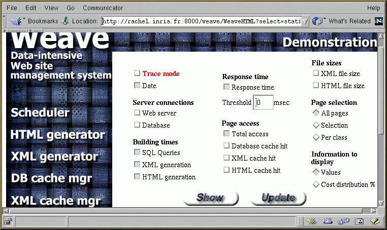
This is an example of an execution report generated by the system after browsing the site. The statistics are grouped by pages. For each page, the report shows the response time (resptime), the SQL query execution time, the XML generation time, the HTML generation time, and the number of time a page has been selected. All the times are in milliseconds.
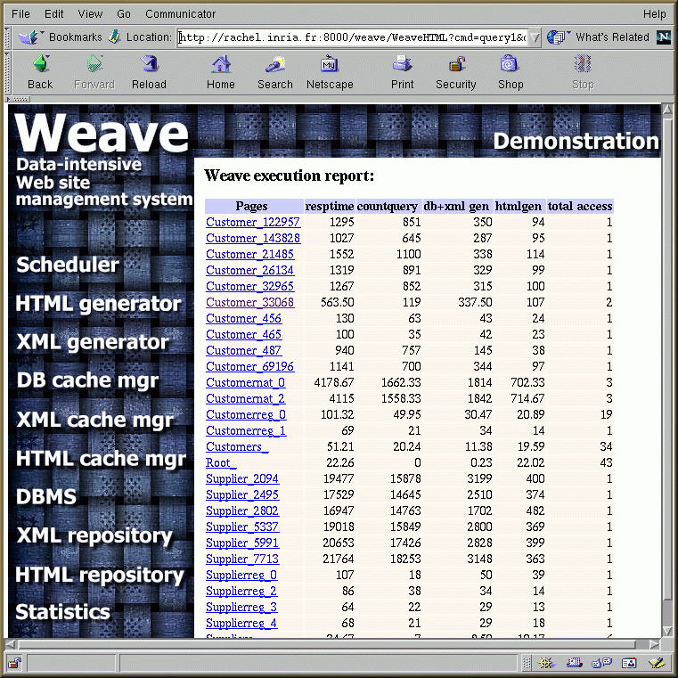
By clicking on a page name (in the first column), we can see, for each page, the execution time for each SQL query used in the evaluation of the selected page. This allows the administrator, for example in the case where the query execution time is the dominate cost, to see which particular query causes the bottleneck.
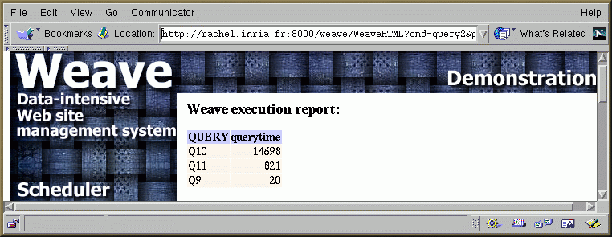
Now, we show how to specify a runtime policy using the WeaveRPL language. From the list of predefined runtime policies, we choose an example of a runtime policy specifying an XML caching. The runtime policy is called "newxml.rtp"
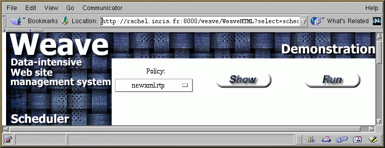
The content of the chosen runtime policy
is displayed bellow. In this runtime policy, the XML cache is specified
as a single container called "xmlcont1". This container is configured
to cache pages of classes Root, Customernat, and Customer. The container
is used to cache complete instances of the two first classes and only some
fragments of class Customer. These fragments correspond to the name, address
and a list of links to suppliers pages of a particular Customer.
In this example, we assume that these fragments are not frequently updated
and worth being cached and the other fragment, which corresponds to the
list of links to a customer's order pages, changes a lot over the time
and should be computed on demand. Besides, all the items in the container
must have a size greater than 2k. This is specified as a global constraint
over the container content.
The onInit event tells the
XML cache manager to compute all the instances of the classes specified
in the container definition and to feed the container by the ones which
respect the specified constraints. The cache content is refreshed every
10 minutes by recomputing the Customernat instances. Finally, when the
cache is full (onFull event), a traditional LRU algorithm is applied
for the replacement of the instances.
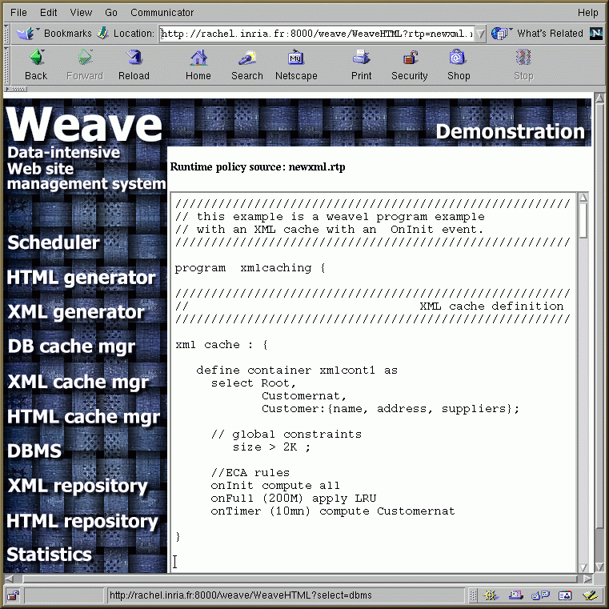
This figure shows the state of the system after the execution of the "newxml.rtp" runtime policy. As for a WeaveL program, the scheduler parses the runtime policy, keeps for itself the information it needs to handle the client HTTP requests and distributes the rest of the runtime policy to the concerned component in the system (the XML Cache Manager in this case). The XML Generator still maintains the schema of the Web site.
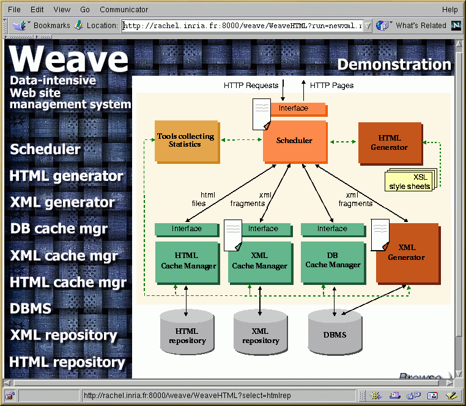
The part of the runtime policy kept by
the scheduler is given bellow. It dictates the scheduler to redirect
all the requests for classes "Customernat", "Root", and "Customer" to the
XML cache manager and all the rest of requests to the XML Generator. It
also tells the scheduler about incomplete fragments, like here for fragments
of class "Customer". In this case, the scheduler has to ask the XML Generator
for the missing fragments (orders, in this case) and than merge all the
fragments together before to send them the HML Generator in order
to produce the requested HTML page.
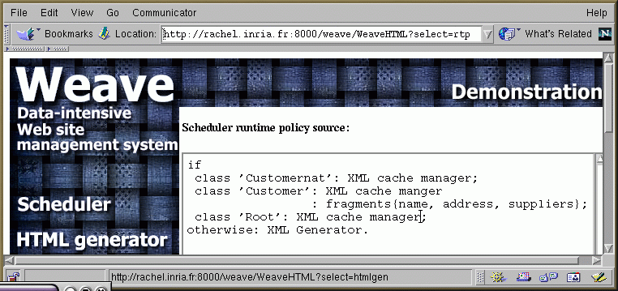
By clicking on the XML Cache Manager component, we can see the part of the runtime policy used by this component to control its cache content.
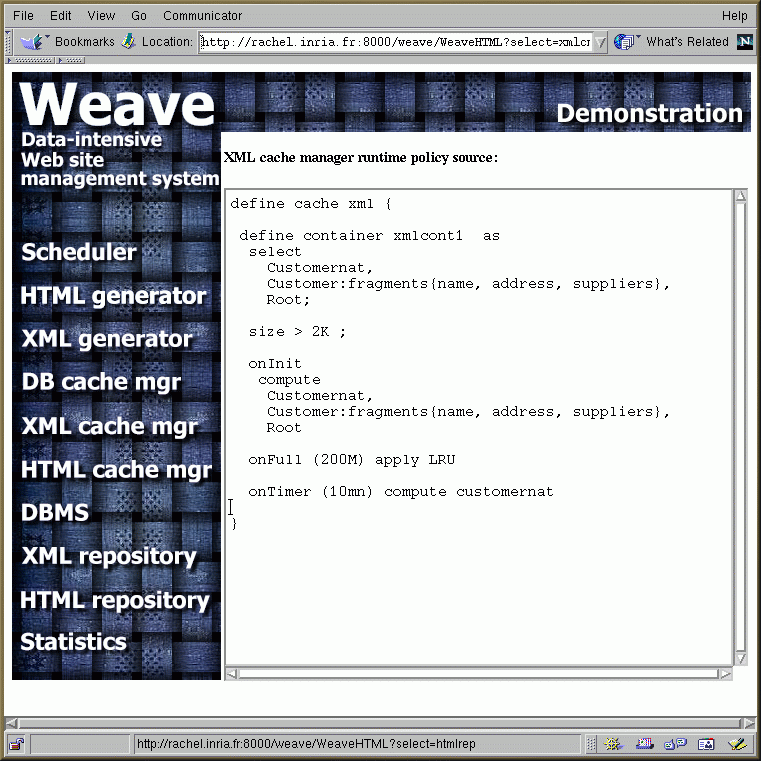
After browsing the site, the administrator can display the content of the XML repository by clicking on the corresponding component in the architecture. The right frame shows the content of the selected XML fragment on the left frame.
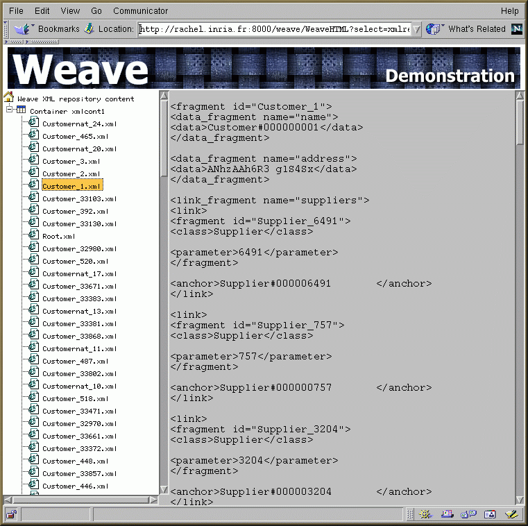
Now, in the same way, we run the system with a new caching strategy using the HTML cache only. The caching strategy is described in a runtime policy called "newhtml.rtp".
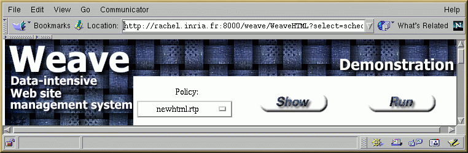
The HTML cache is configured as a single container called "htmlcont1". This container is used to cache instances of classes "Root" and "Customer". When initialized, the onInit rule is used to feed the container with all the instances specified in the container definition.
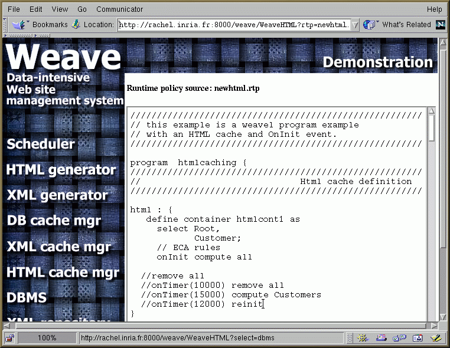
After parsing and distributing the runtime policy, the system state is as follow
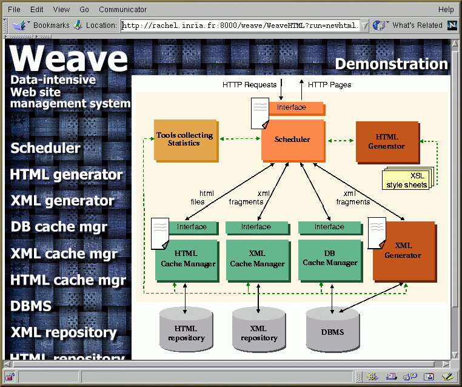
This figure shows the scheduler runtime policy.
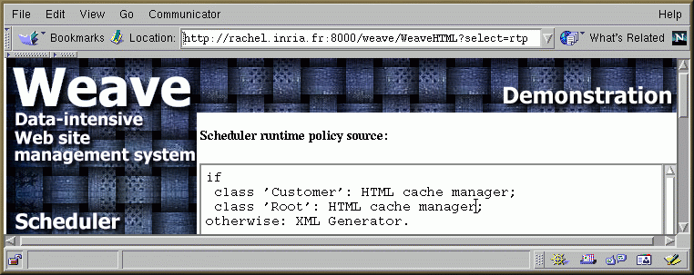
The HTML cache manager runtime policy is given bellow.
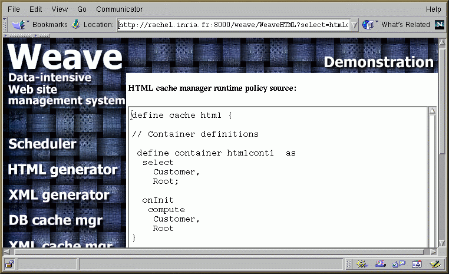
Finally, after browsing the site, the content
of the HTML repository is displayed when clicking on the corresponding
component in the page of the system architecture.
The right frame shows the content of the
HTML page selected on the left frame.
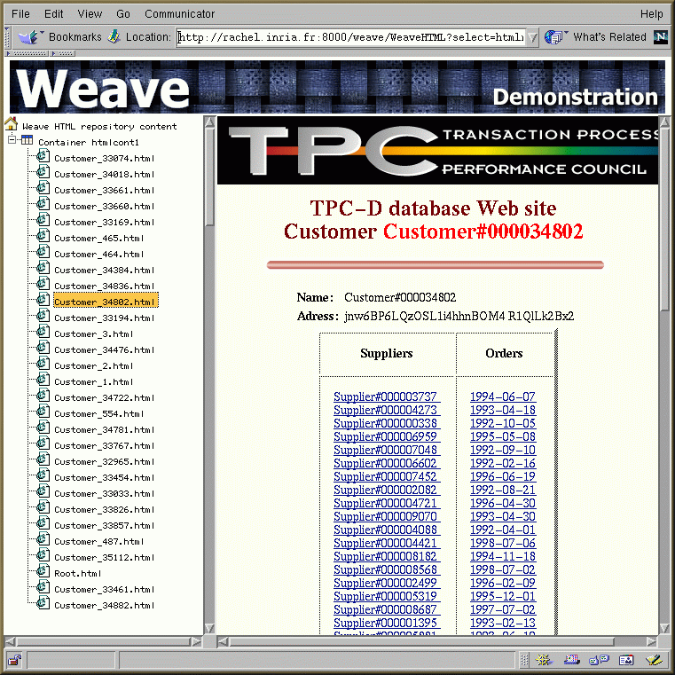